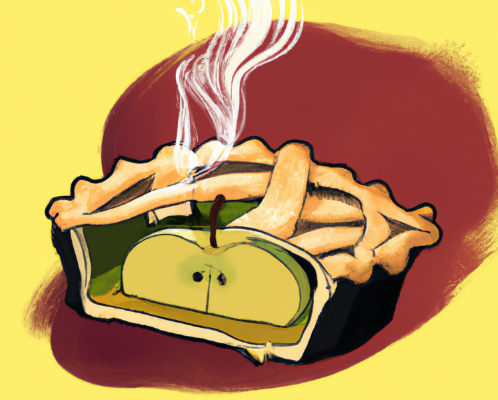

Show code
library(tidyverse)
library(here)
library(ggplot2)
library(dagitty)
library(ggdag)
library(ggraph)
library(gt)This is the second of a three-part blog series on modeling moderators in criminological data. Part 1 addressed issues related to the estimation and interpretation of interaction effects in generalized linear regression models with nonlinear link functions (e.g., logistic, Poisson, and negative binomial regression). In this Part 2 entry, I use a simple example to introduce a 4-way decomposition procedure for separating a total effect into direct, indirect, and interaction components in the presence of a potential exposure-mediator interaction. Part 3 will then use more realistic simulated data to illustrate “causal mediation” analysis with the CMAverse software package in R, which relies on this 4-way potential outcomes decomposition approach to disentangle indirect and interaction effects in the presence of a potential exposure-mediator interaction.
My primary goals in this second post are to introduce counterfactual causality, exposure-mediator interactions, and a potential outcomes framework for conducting a four-way decomposition of a total effect into four distinct components: a controlled direct effect (CDE); a pure indirect effect (PIE); a reference interaction (INTref); and a mediated interaction (INTmed).
Ready to dip your toes into the deep end?
Have you ever stubbed your toe in the dark? Think back to one of those times. Did you say “ouch” or some other four letter word? What do you think caused you to stub your toe?
Let’s add some details to this example: Imagine that you are in an unfamiliar room, at night, with blackout curtains drawn closed over a single window. With the curtains closed, the room lacks sufficient light to help you see obstacles in your path. You are tip-toing across the room in search of a light switch when suddenly - “OUCH!” - you stub your toe on what feels like the leg of a chair. Your mind suddenly and angrily turns to the curtains: “If I had just left those #&%@! curtains open, I never would have stubbed my toe!”

There are two important things to note about this imaginary angry thought. First, it communicates a causal belief or claim. Specifically, your momentary thought communicates a belief that the closed window curtains are (at least partly) responsible for you stubbing your toe. Put differently, you view the closed curtains as a cause of the undesired outcome - perhaps not the only cause, but a noteworthy cause nonetheless.
Second, the structure of this angry thought conveys an implicit view of causal claims as dependent upon contrasts between plausible “potential outcomes” across observed and “counterfactual” conditions. That is, your momentary thought contrasts an observed or factual initial condition (the closed curtain) with a counterfactual initial condition (an open curtain), and then implies a different potential outcome (i.e, a stubbed versus an unstubbed toe) might have occurred if the observed initial condition would have been changed to the counterfactual condition instead.

Many social scientific questions and claims reflect a similar counterfactual logic or, at least, can be recast in counterfactual terms:
In our earlier post on causation without correlation, we also noted that counterfactual reasoning is central to statistical tests of causal claims and even underlies justifications for randomized controlled trials themselves:
“We seem to engage in counterfactual thinking naturally, as it appears central to imagination and rational agency. Pearl and Mackenzie go so far as to claim that the ability to use counterfactual thinking to make “explanation-seeking inferences reliably and repeatably” is what “most distinguishes human from animal intelligence, as well as from model-blind versions of AI and machine learning” (2018, p.33). Moreover, the belief that randomization in controlled experiments offers a valid mechanism for making causal inferences relies upon counterfactual reasoning about potential outcomes; these counterfactual justifications underlying classical statistics were proposed by pioneers Jersey Neyman and Sir Ronald Fisher a century ago! Meanwhile, principled counterfactual frameworks using potential outcomes to make causal inferences with observational data have been in use since the 1970s and represent arguably the best approach to causal identification with observational data today.”
With that said, let’s recast our hypothetical toe-stubbing example into the language of counterfactuals and potential outcomes.
In this simple example, we have two initial “exposure” or “treatment” conditions: curtains closed and curtains open. We will denote curtains open as X=0 and curtains closed as X=1. Likewise, we have two “potential outcome” conditions: unstubbed toe, denoted as Y=0, and stubbed toe, denoted as Y=1.
Given these and our causal expectations, we can write two potential outcomes equations, Y(0)=0 (or Y0=0) and Y(1)=1 (or Y1=1), that respectively represent our expectation of a stubbed toe when curtains are closed and our expectation of an unstubbed toe when curtains are open. Here, I am (loosely) adopting Pearl’s do-calculus notation, where these two equations are abbreviations of longer structural equations for outcome probability expectations under different initial conditions where we do X=0 or X=1. The first equation, Y(0), is shorthand for Y(do[x=0])=0, which means that we expect the value of Y to equal “0” (i.e., we expect an unstubbed toe) when we do X=0 (i.e., when we open the curtains). Similarly, the second equation, Y(1), is shorthand for Y(do[x=1])=1, which means that we expect the value of Y to be “1” (i.e., we expect a stubbed toe) when we do X=1 (i.e., when we close the curtains). Technically, we expect the probability to be closer to zero or one when we do X=0 or X=1, respectively, but just bear with me here.
Additionally, as we have explained before, it is usually helpful to communicate our causal assumptions transparently using a causal diagram or a DAG. In the DAG below, we collapse our exposure conditions and potential outcomes into two variables connected by an arrow to represent our expectation of a causal relationship between curtains (open versus closed) and uttering a four-letter word (unstubbed versus stubbed toe).
library(tidyverse)
library(here)
library(ggplot2)
library(dagitty)
library(ggdag)
library(ggraph)
library(gt)ouchDAG <- dagify(
Ouch ~ Curtains,
exposure = "Curtains",
outcome = "Ouch",
coords=list(
x=c(Curtains=0, Ouch=2),
y=c(Curtains =1, Ouch=1)
)) %>% tidy_dagitty() %>%
dplyr::mutate(focal = ifelse(name != "Curtains", "#56B4E9", "#CC79A7"))
#function to shorten arrows (edges)
# https://stackoverflow.com/questions/65420136/how-do-you-adjust-the-arrows-in-a-ggplot-of-a-ggdag
shorten_dag_arrows <- function(tidy_dag, proportion){
# Update underlying ggdag object
tidy_dag$data <- dplyr::mutate(tidy_dag$data,
xend = (1-proportion/2)*(xend - x) + x,
yend = (1-proportion/2)*(yend - y) + y,
xstart = (1-proportion/2)*(x - xend) + xend,
ystart = (1-proportion/2)*(y-yend) + yend)
return(tidy_dag)
}
ouchDAG1 <- shorten_dag_arrows(ouchDAG, 0.08)
ouchDAG1 <- ouchDAG1 %>% ggplot(aes(x=x, y=y, xend=xend, yend=yend)) +
geom_dag_edges() +
geom_dag_text(aes(color = focal)) +
theme_dag() +
guides(fill = 'none', color = 'none') +
scale_color_manual(values = c("#56B4E9","#CC79A7")) +
scale_y_continuous(expand=expansion(mult=c(0.2,0.2))) +
#change default expansion on y-axis min & max
ggtitle("DAG1") +
theme(plot.title = element_text(size = 12))
ouchDAG1Now, let’s step back and revisit our causal assumptions. Do we really think the closed curtains directly caused us to stub our toes? When interrogating a causal claim, it is usually a good idea to ask “how” and “why” questions, as doing so might illuminate mechanisms that can help us better identify, predict, and explain causal relationships. For instance, why do we think the closed curtains caused us to stub our toe? How might the closed curtains have caused such an outcome to occur?
In this case, you probably do not think that the closed window curtains directly caused toe stubbing. Rather, you likely expect that closed curtains indirectly caused this painful outcome by blocking light from entering the room through the window. In contrast, had the window curtains been open, then there might have been more ambient light in the room and, with sufficient light, you might have been better able to see and to avoid colliding with hazardous objects.
Let’s recast these more precise mechanistic beliefs as potential outcomes and communicate them graphically with a new DAG.
ouchDAG2 <- dagify(
Ouch ~ Light ,
Light ~ Curtains,
exposure = "Curtains",
outcome = "Ouch",
coords=list(
x=c(Curtains=0, Light=1, Ouch=2),
y=c(Curtains =1, Light=1, Ouch=1)
)) %>% tidy_dagitty() %>%
dplyr::mutate(focal = ifelse(name != "Curtains", "#56B4E9", "#CC79A7"))
ouchDAG2 <- shorten_dag_arrows(ouchDAG2, 0.08)
ouchDAG2 <- ouchDAG2 %>% ggplot(aes(x=x, y=y, xend=xend, yend=yend)) +
geom_dag_edges() +
geom_dag_text(aes(color = focal)) +
theme_dag() +
guides(fill = 'none', color = 'none') +
scale_color_manual(values = c("#56B4E9","#CC79A7")) +
scale_y_continuous(expand=expansion(mult=c(0.2,0.2))) +
#change default expansion on y-axis min & max
ggtitle("DAG2") +
theme(plot.title = element_text(size = 12))
ouchDAG2After examining this DAG, many of you might immediately assume it that it displays a classic indirect causal effect or mediating relationship. However, it is worth taking a moment to ponder whether you think light really is a mediator, or instead whether it is a moderator, or perhaps both? For example, consider that opening the curtains might reduce the chances of stubbing your toes when it is light outside and, hence, when doing so lets sufficient light in the room for you to see obstacles in your path. In contrast, when it is not light outside, opening the curtains might not let sufficient light in and, in those situations, opening the curtains (i.e., doing X=0) might not reduce (i.e., cause) the probability of stubbing toes.
Put differently, we might posit a heterogeneous causal effect of opening the curtains on the probability of toe stubbing, where the causal effect is strongest when accompanied by sufficient light but weakest or nonexistent when not accompanied by sufficient light.
If you are a social scientist, you might also be accustomed to seeing an intersecting arrow in a causal diagram to depict this type of conditional effect or moderating relationship, like below:
ouchDAG2b <- dagify(
Ouch ~ Curtains ,
holder ~ Light,
exposure = "Curtains",
outcome = "Ouch",
coords=list(
x=c(Curtains=0, Light=1, holder=1, Ouch=2),
y=c(Curtains =1, Light=0, holder=1, Ouch=1)
)) %>% tidy_dagitty() %>%
dplyr::mutate(focal = ifelse(name != "Window", "#56B4E9", "#CC79A7"))
ouchDAG2b <- shorten_dag_arrows(ouchDAG2b, 0.08)
#create factor variable to isolate edge of interest, permits specifying edge color
ouchDAG2b <- ouchDAG2b %>% dplyr::mutate(
myedge1 = if_else(ouchDAG2b$data$name == "Light" & ouchDAG2b$data$to == "holder",
"yes", "no"),
modlinetype = ifelse(myedge1 == "yes", "solid", "dashed")
)
#plot dag
fig3 <- ouchDAG2b %>% ggplot(aes(x=x, y=y, xend=xend, yend=yend)) +
geom_dag_edges(aes(x = xstart, y = ystart, edge_color=myedge1,
edge_linetype = modlinetype), show.legend = FALSE) +
geom_dag_text(data = function(x) filter(x, name != "holder"),
color="#56B4E9") +
theme_dag() +
scale_y_continuous(expand=expansion(mult=c(0.2,0.2))) + #change default expansion on y-axis min & max
scale_edge_colour_manual(values=c("darkgrey", "maroon")) + #change second color to highlight focal myedge1
# ggtitle("DAG w/mediation & interaction") +
ggtitle("Classic Moderation Diagram") +
theme(plot.title = element_text(size = 12))
fig3 So, is light a mediator, or a moderator, or is it both? Well, it turns out that mediation and moderation are not always as distinguishable as one might think.
In fact, this potential overlap is communicated by a proper DAG of mediating and moderating relationships. As we noted in Part 1, a traditional DAG does not use intersecting arrows to depict moderation. Rather, arrows indicate information flow, while heterogeneous (moderation) effects are captured in the functional forms of the mathematical equations used to model causal relationships. Likewise, below is a DAG that illustrates the possibility of (heterogeneous) direct and indirect effects of closed curtains on stubbing toes.
ouchDAG3 <- dagify(
Ouch ~ Curtains + Light ,
Light ~ Curtains,
exposure = "Curtains",
outcome = "Ouch",
coords=list(
x=c(Curtains=0, Light=1, Ouch=2),
y=c(Curtains =0, Light=1, Ouch=0)
)) %>% tidy_dagitty() %>%
dplyr::mutate(focal = ifelse(name != "Curtains", "#56B4E9", "#CC79A7"))
ouchDAG3 <- shorten_dag_arrows(ouchDAG3, 0.08)
ouchDAG3 <- ouchDAG3 %>% ggplot(aes(x=x, y=y, xend=xend, yend=yend)) +
geom_dag_edges() +
geom_dag_text(aes(color = focal)) +
theme_dag() +
guides(fill = 'none', color = 'none') +
scale_color_manual(values = c("#56B4E9","#CC79A7")) +
scale_y_continuous(expand=expansion(mult=c(0.2,0.2))) +
#change default expansion on y-axis min & max
ggtitle("DAG3") +
theme(plot.title = element_text(size = 12))
ouchDAG3An important takeaway message is that when we are examining causal systems that we think might involve a mediating mechanism, it is important to formally assess whether there is evidence of a non-negligible exposure-mediator interaction. An exposure-mediator interaction is a situation where the effect of the focal cause or exposure (opening or closing the curtains) on an outcome (toe stubbing) varies across the range of values of the posited mediating mechanism (ambient light levels in the room).
Often, when testing mediation hypotheses, assessing this possibility will entail the inclusion of a multiplicative interaction term representing a potential exposure-mediator interaction (X*M) into your model, estimating marginal effects, and plotting model predictions on the outcome scale across levels of the exposure and mechanism.1 In the presence of an additive interaction, your modeling approach should account for the joint possibility of mediation and moderation. In this situation, the “causal mediation” or potential outcomes decomposition approach can help you disentangle indirect and interaction effects.2
The first thing to note about causal mediation effect decomposition is that it generates population-average inferences about counterfactual conditions. Recall, we cannot observe counterfactual causality among individual units because we can only observe one of two (or more) possible conditions for any individual unit. In our example, either the curtains were closed or open, and either we did or did not stub our toe. If the curtains were closed and we stubbed our toe, then we cannot observe the counterfactual condition in which the curtains instead would have been open to see what might have happened to our toes. However, we can make causal inferences about potential outcomes across counterfactual conditions with sufficient data from populations, a careful research design, and a proper causal (theoretical) model. In our example, that would require many observations of mechanism states (ambient light levels in the room) and outcome occurrences (stubbed toes) in the room under both exposure and non-exposure conditions (when the curtains were open and when curtains were closed) along with some assumptions.
In Part 3 of this series, I will work through an example of effect decomposition in R using simulated crime-relevant data. First, though, I hope to build upon your intuitions about how this decomposition procedure works in this entry using some toy data based on our toe stubbing example. The goal of this example is to introduce you to key terminology and the conceptual basis for potential outcomes effect decomposition before getting into a more realistic applied example in which we will use software to perform the decomposition for us.
Note that this first toy example is intended as a simple application of VanderWeele’s initial 4-way effect decomposition example in which exposure and mediator values are set at specific counterfactual values (setting M to 0 or 1). Later, I will briefly introduce more complex counterfactual logic (e.g., setting M at its expected value when X=0 or X=1), which will be required for estimating and interpreting “natural” direct and indirect effects found in CMAverse output in Part 3. For more and better resources on this topic, I recommend reading VanderWeele’s 2014 paper itself, as well as his tutorials and short video course on causal mediation, all of which are available on his website.
ouchdat <- tribble(
~CurtainClosed, ~AmpleLight, ~StubToe,
1, 0, 1,
1, 0, 1,
1, 0, 1,
1, 0, 1,
1, 0, 1,
1, 0, 0,
1, 0, 0,
1, 0, 0,
1, 0, 0,
1, 0, 0,
1, 1, 0,
0, 1, 1,
0, 1, 0,
0, 1, 0,
0, 1, 0,
0, 1, 0,
0, 1, 0,
0, 1, 0,
0, 1, 0,
0, 0, 1,
0, 0, 0,
)
head(ouchdat,n=11) %>% gt()
tail(ouchdat,n=10) %>% gt()| CurtainClosed | AmpleLight | StubToe |
|---|---|---|
| 1 | 0 | 1 |
| 1 | 0 | 1 |
| 1 | 0 | 1 |
| 1 | 0 | 1 |
| 1 | 0 | 1 |
| 1 | 0 | 0 |
| 1 | 0 | 0 |
| 1 | 0 | 0 |
| 1 | 0 | 0 |
| 1 | 0 | 0 |
| 1 | 1 | 0 |
| CurtainClosed | AmpleLight | StubToe |
|---|---|---|
| 0 | 1 | 1 |
| 0 | 1 | 0 |
| 0 | 1 | 0 |
| 0 | 1 | 0 |
| 0 | 1 | 0 |
| 0 | 1 | 0 |
| 0 | 1 | 0 |
| 0 | 1 | 0 |
| 0 | 0 | 1 |
| 0 | 0 | 0 |
Toy toe-stubbing data
These data represent n = 21 curtains, light, and toe stubbing observations. In approximately half of the cases, the curtains were closed (CurtainClosed = 1; n = 11); in the other cases, the curtains were open (CurtainClosed = 0; n = 10). The overall probability of stubbing toes, or P(Y), is 0.33 (StubToe = 1; n = 7/21). We will use these hypothetical “observed” probabilities to represent (counterfactual) expectations.
Y0 and Y1
The probability of stubbing toes varies across exposure conditions. The probability of stubbing toes given the curtains were open, denoted by P(Y|do[X=0]) or abbreviated to Y0, is 0.2. That is, we stubbed our toes in 2 out of 10 cases in which curtains were open. In contrast, we stubbed our toes in 5 out of 11 cases in which curtains were closed, which means that P(Y|do[X=1]), or Y1, is equal to 0.45.
In this example, we can calculate the total effect (TE) simply as the difference between the outcome probabilities across exposed and unexposed conditions. The estimated total effect of closing curtains on toe stubbing is Y1 - Y0, or 0.455 - 0.2, which equals 0.255. Put differently, opening curtains reduces the predicted probability of toe stubbing by about 26 percentage points (from ~45.5% to 20%).

M0 and M1
What about our mechanism? The probability of experiencing sufficient ambient light in the room to be able to see obstacles is P(M) = 0.43, since 9 out of 21 cases had a AmpleLight value = 1. Like stubbing our toes, the probability of experiencing sufficient light also varied across exposure conditions. The probability of sufficient light given the curtains were open, denoted by P(M|do[X=0]) or abbreviated to M0, is 0.80 (i.e., 8/10). In contrast, there was sufficient light in the room in only 1 out of 11 cases in which the curtains were closed, which means that P(M|do[X=1]) or M1 = 0.09.

Now, let’s consider jointly how the probability of stubbing our toes changes given different combinations of exposure and mediator conditions, or given that we open or close curtains and simultaneously observe the presence or absence of sufficient ambient light in the room.
Y00
Let’s start with the probability of stubbing toes given open curtains and the absence of sufficient light, which we will denote as P(Y|do[X=0],do[M=0]) and abbreviate to Y00. Given some assumptions, this quantity represents the expected probability of stubbing our toes if we do X=0 (i.e., if we open the curtains) and if we were able to set the mechanism to absent, or M=0. In other words, we are setting the room to insufficient light, or AmpleLight = 0, with the curtains open. There were 2 observed cases in which X=0 and M=0. Perhaps these cases represented especially dark nights during which the open window curtains were not effective in increasing the amount of ambient light in the room. In half of these cases (1/2), we stubbed our toes, meaning Y00 = 0.5.

Y10
Now, imagine we do X=1 instead (i.e., we close the curtains) and we continue hold the mechanism constant at the value of “0”. That is, we set the room to insufficient light, or AmpleLight = 0, with the curtains closed. There are ten observed cases in which the curtains were closed and there was insufficient ambient light in the room. We stubbed our toes in five of these ten cases, meaning P(Y|do[X=1],do[M=0]) or Y10 = 0.5.
With the quantities above, we now have enough information to calculate the controlled direct effect, or CDE, of X on Y. Conceptually, the CDE of an exposure is the expected effect that an exposure would have on the outcome if the mechanism (M) were fixed at a specific value (m). Here is the potential outcomes equation for the CDE:
CDE = Y1m - Y0m, where we set M to a specific value “m”
Commonly, we might wish to estimate the controlled direct effect when the mediator is equal to zero. In this case, the CDE of an exposure is the expected effect that an exposure would have on the outcome if the mechanism were removed or fixed at M=0. Here, when we set M to m=0, the CDE is equivalent to the difference between Y10 and Y00, or the estimated effect on Y of doing X in the absence of the mechanism:
CDE(M=0) = Y10 - Y00
= 0.5 - 0.5
= 0.0
In essence, this value of 0.0 indicates that doing X = 1 (i.e., closing the curtains) instead of doing X = 0 is expected to have no effect on the probability of toe stubbing once we remove from the equation the effect that opening curtains has on the mechanism (ie., letting sufficient ambient light into the room). Put differently, closing the window curtains is not expected to have a direct effect on stubbing toes above and beyond any indirect effects it has on the ambient light levels in the room.
Think of it this way: You are in a dark room with curtains closed (do[X=1],do[M=0]) and, after opening the curtains, the room remained just as dark as it was before (do[X=0],do[M=0]). A CDE = 0 indicates that the probability of stubbing your toes would remain unchanged in that situation, where opening or closing the curtains does not add any ambient light into the dark room (Y10 - Y00 = 0). Either way, it is dark, and you are predicted to have a coinflip’s chance (Y10 = Y00 = .50) of stubbing your toes.
Y01
In addition to Y10 and Y00, there are additional quantities we can estimate that will help us further decompose the total effect into other meaningful components like the CDE. For instance, what if we were to open the curtains (do[X=0]) while also holding constant a sufficient amount of ambient light in the room (do[M=1])? In our toy data, there were eight observations in which the curtains were open and we experienced sufficient ambient light in the room that allowed us to see. We stubbed our toe in only one of these eight cases (1/8), so P(Y|do[X=0],do[M=1]) or Y01 = 0.125.

Y11
Now, imagine instead we close the curtains (do[X=1]) and continue holding a sufficient amount of ambient light in the room constant (do[M=1]). There is only one observation in these toy data with X=1 and M=1. Perhaps a hall light was on, or perhaps we used our cell phone backlight to provide ambient light when the curtains were closed. In any case, we did not stub our toe in this one instance (0/1), so P(Y|do[X=1],do[M=1]) or Y11 = 0.0.

With the various quantities calculated above (e.g., M0; M1; Y00; Y10; Y01; Y11), now we have enough information to decompose the total effect of X on Y into four different components. Specifically, the total effect, or TE, is a composite value representing the sum of the controlled direct effect (CDE); reference interaction (INTref); mediated interaction (INTmed); and the pure indirect effect (PIE). I already covered the CDE above. Below, I will describe the remaining three components: INTref, INTmed, and PIE.
When we observe a nonzero total effect of an exposure on an outcome, a common thing to do is to test whether the exposure operates indirectly through a posited mediating mechanism(s). However, an observed total effect might wholly (or partly) reflect the operation of an additive interaction between the exposure and a mechanism rather than (or in addition to) a mediation process as is often assumed.
Yes, you read that right. An observed total effect of an exposure on an outcome might (only) reflect the presence of an interaction effect, and failure to account for this when testing indirect effect hypotheses using traditional mediation tests might result in erroneously attributing moderation to mediation, or vice versa. Moderator madness indeed! If you cannot recall learning about this in your graduate stats courses, then you are not alone.
At this point, you can probably guess that we account for this possibility by decomposing the total effect into its various possible constituent parts. As implied here, one of the components that may comprise a total effect is the reference interaction (INTref), which is an additive interaction that operates only if mediator is present in the absence of the exposure. As VanderWeele explains (p.750), the reference interaction component is nonzero when “the effect on the outcome of setting both the exposure and the mediator to present differs from the sum of the effect of having only the exposure present and the effect of having only the mediator present.”
Though that might sound confusing, this is essentially a classic interaction effect. Do you find yourself preferring our probability notation yet? Either way, let’s use it to calculate INTref.
The INTref component is nonzero when [P(Y|do[X=1],do[M=1]) - P(Y|do[X=0],do[M=0])] is not equal to [(P(Y|do[X=1]) - P(Y|do[X=0])] + [(P(Y|do[M=1]) - P(Y|do[M=0])]. Let’s check this with our toy data, using our abbreviated notation for quantities that we have already calculated:
Y11 - Y00
= 0.0 - 0.5
= -0.5
[Y1 - Y0] + [(P(Y|do[M=1]) - P(Y|do[M=0])]
= [0.45 - 0.2] + [.11 - 0.5]
= -0.25 + -0.39
= -0.64
Since -0.5 is not equal to -0.64, we would expect a nonzero INTref estimate.
We can use the quantities calculated earlier to estimate the reference interaction using the equations provided in VanderWeele’s Table 1 on p.751:
INTref = (Y11 - Y10 - Y01 + Y00)(M0)
= (0.0 - 0.5 - 0.125 + 0.5)(0.8)
= (-.125)(0.8)
= -0.1
Here, our toy data show a small reference interaction. What does this mean and where did it come from? Well, first remember that a reference interaction is an additive interaction that operates only if mediator is present in the absence of the exposure. Likewise, we observed the mechanism (sufficient ambient light) when the curtains were open and when they were closed, so a nonzero reference interaction estimate is possible. The logic here, which mirrors that of a classic interaction, is that we must be able to assess the effect of doing X=1 (versus X=0) both in the absence and in the presence of the mechanism. Then, if the estimated effect of doing X=1 differs across those conditions (or across levels of the mechanism), we would have a nonzero exposure-mediator “reference interaction.”

Now, recall that we did not stub our toes in that one time we observed closed curtains and the mechanism present (Y11 = 0/1 = 0.0). However, we did stub our toe in one of the eight instances with open curtains and the mechanism present (Y01 = 1/8 = 0.125). Meanwhile, the probability of stubbing our toes was equal across exposure conditions in the absence of the mediator (Y10 = 5/10 = 0.5; Y00 = 1/2 = 0.5).
From these comparisons, it appears that doing X=1 instead of X=0 (closing curtains) slightly reduced the probability of toe stubbing with the mechanism present (Y11 - Y01 = 0.0 - 0.125 = -.125), whereas doing X=1 instead of X=0 had no effect on the probability of toe stubbing with the mechanism absent (Y10 - Y00 = 0.5 - 0.5 = 0). In the equation above, we essentially used these same comparisons and then weighted the resulting difference-in-differences value by the expectation of observing the mediator in the absence of exposure (i.e., M0 = probability of observing M=1 given we do[X=0]).3
Strong caveat: If these were real data, I would strongly recommend against making any inferences from this INTref estimate given it was generated using a very small sample (e.g., only n=1 observation for one of the cells). Unfortunately, such noisy and unreliable inferences are all too common in criminology. But, that is an entry for another day.
One final point about the INTref component: As VanderWeele explains (p.755), the INTref “requires the mediator to operate, but the effect does not come about by the exposure changing the mediator — it simply requires that the mediator is present even when the exposure is absent; the effect is ‘unmediated,’ in the sense that it does not operate by the exposure changing the mediator, but it requires the presence of the mediator nonetheless.” In contrast, the remaining two components (PIE and INTmed) both involve mediation such that doing X (i.e., the exposure) affects the outcome at least partly by changing the mediator. Now, let’s move to the next component.
As noted above, when we observe a total effect of an exposure on an outcome, that total effect might also reflect an indirect effect of the exposure operating through a specific mediating mechanism(s). In this four-way decomposition, the “pure indirect effect” (PIE) component is the analogue of this classic indirect effect. Formally, the PIE component represents the effect of the mediator in the absence of the exposure, and it is non-zero only if: (1) the exposure itself affects mediator and (2) the mediator affects the outcome when the exposure is absent.
Here, closing curtains decreases light in the room, and light reduces the chances of stubbing toes when the curtains are open. Using the equations in VanderWeele’s Table 1, we can estimate the PIE component using the quantities calculated earlier by estimating the effect of doing M in the absence of X (Y01 - Y00) and then weighting this contrast by the effect of doing X on the mediator (M1-M0):
PIE = (Y01 - Y00)(M1 - M0)
= (0.125 - 0.5)(0.09 - 0.8)
= (-0.375)(-0.71)
= 0.266
Recall, the total effect of closing the curtains on toe stubbing was 0.255. Closing curtains primarily increases our chances of stubbed toes indirectly by blocking light out of the room. In this case, the indirect effect estimate is quite close to the total effect estimate (0.266 versus 0.255). However, it does not always work out this way. In fact, as we will see, the only reason it worked out this way in our toy example is because the other two nonzero components, INTref and INTmed, were of approximately equal magnitude with opposite signs, so they cancel each other out when summing for the total effect.
This is an important point. If we had relied strictly on the total effect, or on traditional mediation test procedures, to make inferences about the exposure’s effect on the outcome via the primary mediating mechanism, then we would have been close to accurately estimating the indirect effect. However, we would have done so only by luck or accident, and we would have missed completely the other two nonzero interaction components.

Speaking of those other two interaction components, we already discussed INTref; now, let’s move on to INTmed, our fourth component.
So far, we have discussed controlled direct effects, reference interaction effects, and pure indirect effects. Each of these is analogous (in certain situations) to well-known direct effects, interaction effects (moderation), and indirect effects (mediation), though their empirical connections as distinct components of a total effect may be less widely appreciated or understood.
This is good time to introduce the most important use cases for decomposition: When there is no exposure-mediator interaction (and strong causal assumptions hold), then traditional approaches to detecting interaction effects or testing indirect effects are often reliable and decomposition procedures may be unnecessary. However, when there is a nonzero exposure-mediator interaction, then traditional approaches become problematic, decomposition is essential, and the constituent components comprising a total effect become more complex - and potentially more numerous. For instance, in such situations, we may find a fourth nonzero component also contributes to the total effect - the “mediated interaction” or INTmed.
The “mediated interaction” or INTmed component represents an additive interaction that operates only if the exposure has an effect on the mechanism. As VanderWeele explains (p.750), when the INTmed component is nonzero, this means that “the exposure causes the mediator, and the presence of the mediator is itself necessary for the exposure to have an effect on the outcome.”
In our toy example, the probability of stubbing our toes varies across values of X (i.e., whether curtains are open or closed); that is, P(Y|do[X=x],do[M=1]) varies across do[X=0] and do[X=1]. Given the presence of the mechanism (sufficient ambient light), the probability of stubbing toes is higher when the exposure is “absent” (X=0, or curtains open) than it is when the exposure is present (X=1, or curtains closed). We can check this with our data:
Curtains open: P(Y|do[X=0],do[M=1]) = Y01 = 1/8 = 0.125
Curtains closed: P(Y|do[X=1],do[M=1]) = Y11 = 0/1 = 0.0
We can also use the quantities estimated earlier to calculate the INTmed component. Like the INTref component, we are essentially generating a weighted difference-in-difference contrast. Like the PIE component, we are weighting that contrast by the effect of doing X on the mediator (M1 - M0):
INTmed = (Y11 - Y10 - Y01 + Y00)(M1 - M0)
= (0.0 - 0.5 - 0.125 + 0.5)(0.09 - 0.8)
= (-0.125)(-0.71)
= 0.089
Recall, when the mechanism was present in this toy example (i.e., AmpleLight=1), toe stubbing was less likely when the curtains were closed (Y11 = 0.0) than when they were open (Y01 = 0.125). In other words, closing the curtains (do[X=1]) reduced the probability of toe stubbing in the presence of the mechanism. However, this effect was only observed in the presence of the mechanism; when AmpleLight=0, the probability of toe stubbing was the same whether the curtains were open (Y00 = 0.5) or closed (Y10 = 0.5). Moreover, closing the curtain reduced the probability of observing the mechanism (M1 - M0 = 0.09 - 0.80 = -0.71). So, the exposure causes this conditional effect, meaning it is a mediated interaction (INTmed).
Put differently, since opening the curtains increases light in the room, and opening the curtains appears to increase toe stubbing when light is present, then the exposure actually increases risks of toe stubbing by increasing the conditions (light) under which it amplifies the risks of the outcome occurring. Again, this is a mediated interaction.
Another caveat: I strongly caution against such real world inferences when data are so sparse; like our INTref, this mediated interaction is based on a comparison generated from n=1 observation in one of the cells! If we had more (and real) data, I highly doubt we would observe a negative effect of closing curtains on toe stubbing in the presence of the mechanism. Still, despite the implausibility of this toy example, I hope it helps you better understand the components that comprise a total effect.
Before moving on to a simulated example, I want to revisit the total effect (TE) that we just decomposed into four component parts. Recall earlier how we calculated the total effect of X on Y as the difference between the outcome probabilities across exposed and unexposed conditions (Y1 - Y0)?
TE = Y1 - Y0
= 0.455 - .20
= 0.255
Well, after decomposing these four constituent components of the total effect, we can also calculate the total effect by summing these four components. This is a good way to check that our calculations were correct!
TE = CDE + INTref + INTmed + PIE
= 0 + (-0.1) + 0.089 + 0.266
= 0.255
It worked! Whew.
At this point, I am hoping the toy example above helped build your intuitions about the 4-way total effect decomposition and that you feel ready to move on to a somewhat more realistic use case with simulated data.
In the next post (Part 3), I will illustrate how to use the CMAverse package in R to conduct causal mediation analysis, which relies on potential outcomes decomposition to disentangle indirect and interaction effects in the presence of a potential exposure-mediator interaction. Part 3 will also introduce the important assumptions required to interpret results as estimates of causal effects.
In a linear model, if the multiplicative interaction coefficient departs from zero, then you should typically acccount for the possibility of an exposure-mediator interaction. However, do NOT rely on statistical significance of the interaction coefficient to make this determination as those tests are notoriously underpowered. Things get more complicated with nonlinear models, as a substantial additive exposure-mediator interaction on the outcome scale might exist even if the interaction coefficient is near-zero in magnitude on the estimation scale. Recall, this is because nonlinear models are fundamentally interactive: A linear effect of the exposure on the model estimation scale quite often implies a heterogeneous effect of the exposure on the outcome scale across covariate (e.g., mechanism) levels irrespective of the magnitude or significance of the interaction term on the linear estimation scale. I discussed this issue in Part 1 of this series, and I will provide another example of a substantial exposure-mediator interaction accompanied by a near-zero interaction coefficient in Part 3, the next post in the series.↩︎
At this point, you might be wondering: “Do I really need to do this? The [insert] theory I am testing does not predict such an interaction!” Well, failure to examine and adjust for the possibility of an exposure-mediator interaction is equivalent to forcing your model of the data generating process to conform to a strong and potentially incorrect theoretical assumption about underlying data generating processes. In SEM parlance, it is equivalent to “fixing” the effect of X on Y through M to be the same at all values of M. In situations where the effect of X on Y indeed varies across strata of M, failure to account for it could result in biased or incomplete inferences. In contrast, allowing for and decomposing a potential exposure-mediator interaction is, in SEM terms, akin to “freeing” that parameter, thus permitting a test of that strong theoretical assumption. In situations where no such interaction exists, the magnitude of the interaction will approach zero, and traditional and “causal” mediation approaches (e.g., “controlled” and “natural” effect estimates) will converge to the same values. In those situations, decomposition would be unnecessary yet nonetheless informative. In short, there is substantial upside and little downside apart from learning the skills to testing and accounting for exposure-mediator interactions whether or not one exists, yet there are potentially substantial inferential risks to not doing so when one exists. So, just how a priori confident are you in that likely imprecise and discursive theory of yours?↩︎
Are you wondering what the (Y11 - Y10 - Y01 + Y00) term represents? Well, you can think of it as contrasting the effect of X (i.e., doing X=1 - doing X=0) in the mechanism’s presence (M=1) versus its absence (M=0). Alternatively, you can also think of it as contrasting the effect of M (i.e,. doing M=1 - doing M=0) in the exposure’s presence (X=1) versus its absence (X=0). Let’s use the latter to show our work:
(Effect of M | X=1) - (Effect of M | X=0)
= (Y11 - Y10) - (Y01 - Y00)
From here, we just do a bit of basic algebra:
= Y11 - Y10 + (-1)(Y01 - Y00)
= Y11 - Y10 - Y01 + Y00↩︎
@online{brauer2024,
author = {Brauer, Jon},
title = {Moderator {Madness,} {Part} 2},
date = {2024-02-23},
url = {https://reluctantcriminologists.com/blog-posts/[7]/modmadness-pt2.html},
langid = {en}
}